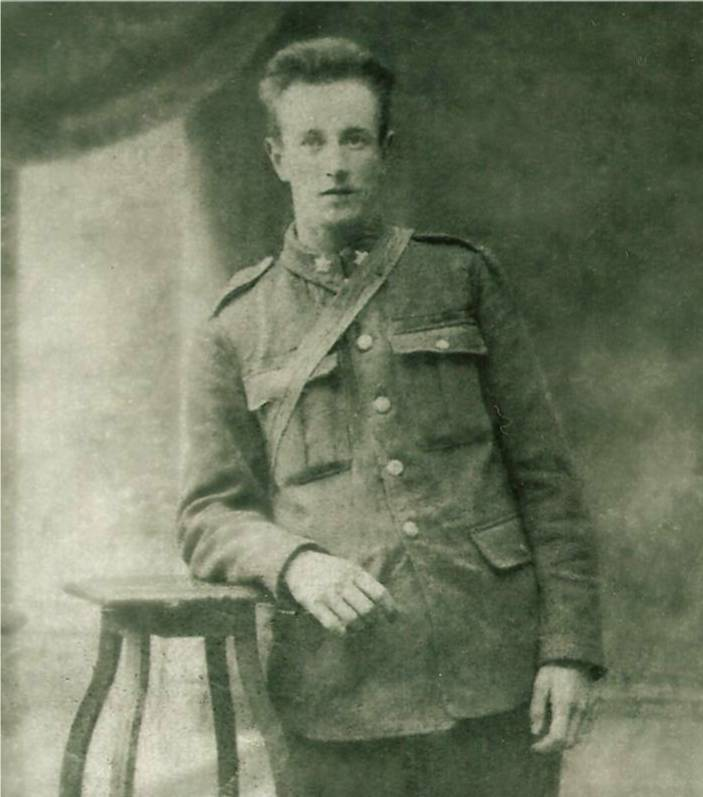
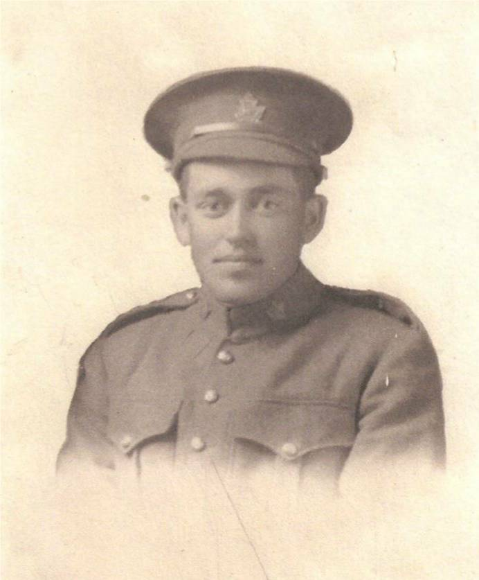
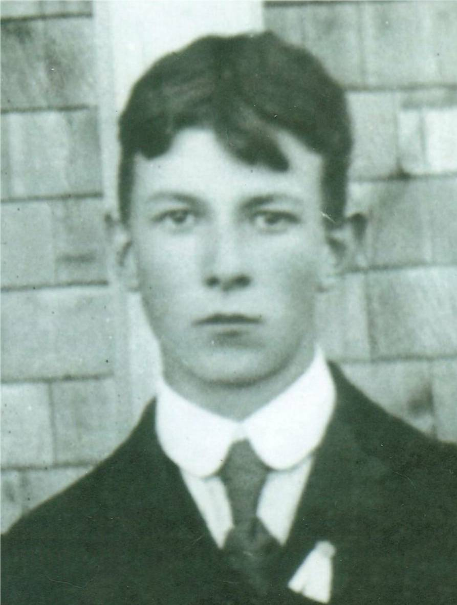
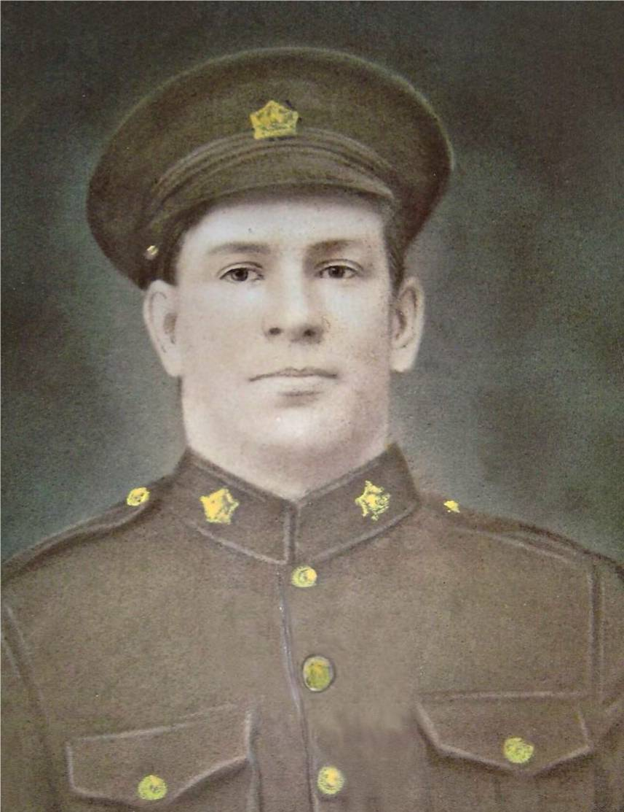

The Family Chronicle
No.153 February, 2008
____________________________________________________________________





BLACK RIVER VETERANS OF WW1
Forty six young men from Black River volunteered for overseas duty during WW1; five did not return. (Thanks to Cameron MacDonald for this list.)
Gnr. Stephen John Dick, #522059, son of Alexander and Selina (Weaver) Dick, January 18, 1895-October 1, 1918, 1st Brigade, Canadian Field Artillery, buried in Haynecourt British Cemetery, about 6 miles northwest of Cambrai, France, age 23.
Pte. Joseph Ward Finno, #23515, son of James and Isobel (MacDonald) Finno , September 28, 1895-November 9, 1918, First Field Bakery, Canadian Army Service Corps, buried in Terlincthun British Cemetery, Wimille, near Bolougne, France, age 23. Terlincthun Cemetery was near a rest camp and medical treatment complex; it is likely that Joe was wounded earlier and taken to the hospital.
Pte. J. Archibald Mills, #794113, son of John Alexander and Mary (MacNaughton) Mills, November 19, 1893-April 9, 1917, 42nd Battalion, Canadian Infantry (Quebec Regiment), buried in Nine Elms Military Cemetery near Vimy Ridge, France, age 24. Archie was one of 80 Canadians killed on April 9, the first day of the Battle of Vimy Ridge.
Csm. Archibald A. Watling, #22802), son of Malcolm and Elizabeth (Cameron) Watling, December 4, 1894-July 14, 1917, 19th Canadian Infantry (Quebec Regiment, wounded in France and died in England, buried Brookwood Cemetery about 30 miles from London, age 23.
Pte. Ernest Alfred Williston, #70038, , son of Luther and Catherine (Cameron) Williston, April 10, 1890-Sept 28, 1916, 26th Battalion, Canadian Infantry (new Brunswick Regiment), buried in Courcelette British Cemetery, near Albert, France, age 24. Courcelette was the scene of heavy fighting in September 1916.
Complete list
Adams, George
Adams, James
Adams, William
Cameron Leslie
Cameron, Arch. M.
Dick, Stephen J.
Finno, Joseph
Fowlie, Fred F.
Gibson, Ernest
Gibson, Ward
Godfrey, Andrew
Godfrey, Arch
Godfrey, Frank
Godfrey, Robert
Godfrey, Samuel
Kelly, Hugh
Macdonald, Basil
MacDonald, Campbell
MacDonald, Ernest
MacDonald, Fred J.
MacDonald, Herb
MacDonald, Herb A.
MacDonald, Robert
MacDonald, Thomas
MacDonald, Walter
Macdonald, William,
MacLean, Arch
MacLean, Frank
MacLean, Fred
MacLean, Garvie
MacNaughton, Alex
MacNaughton, J. Archie
McKnight, John G.
McLean William
McLean, George
McLean, Thomas
McRae, James R.
Mills, J. Archie
Mills, W. Roy
Palmer, James
Sullivan, David
Watling, Arch
Watling, Ernest
Watling, William G.
Watling, William J.
Williston, Ernest